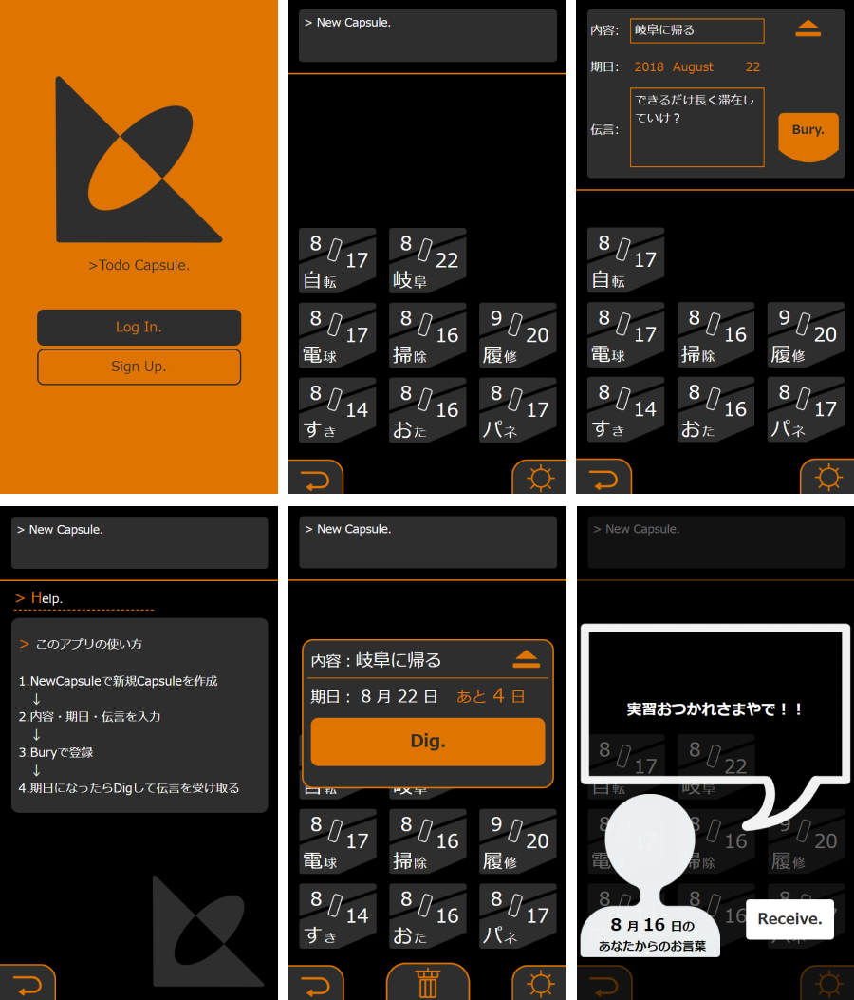

#エナドリチャレンジ
応援わんこ
エナドリキメて頑張るワン！！
製作時期：2021年3月
学習技術：React, Figma
学生限定オンラインハッカソンにて「Boost」をテーマに5人チームで制作。WEBページとTwitterのbotから成る、「今現在エナジードリンクを飲んで頑張っている人」がどれくらい居るかわかるプロダクト。「エナドリツイート」をすることでBotから応援される。Twitterを用いる手軽さを重視した。
フロントエンドの一部分を担当、プレゼンを行い、優勝した。
Reactによる開発経験が無かったため、実際の開発を通して学ぶことができた。また、チーム開発の経験を積むことができた。テーマに沿い、チーム全体でアイデアの洗練を徹底的に行えたことが優勝に繋がったと感じた。
◇実際のWebページはこちらから。
戻る▷
Babel
この世界に、実現不可能はない。
製作時期：2021年1月
学習技術：Unity&C#
「1分で遊べるゲーム」をテーマに制作した、生成されるブロックを台上に積んでいくパズルゲーム。
簡単なルール、簡単な操作による理解しやすいゲーム性と、プレイを重ねることで成長できる奥深さを大切にした。
プレイする心地よさを前面に出した。BGMやエフェクト、シンプルなデザインによりプレイするだけで癒されるようなゲームになったと感じる。
◇web版ゲームページはこちらから。
戻る▷
のうざんまい
〜能世界の雅なカードゲーム〜
製作時期：2020年11月
学習技術：figma
日本の芸能である「能」を若年層にも幅広く周知させ、実際の公演へ足を運んでもらうことを目的とし制作した、アナログ・カードゲーム。3人のチームで制作し、カードのデザイン、主なゲームシステムのデザインを担当した。
トランプのように複数の遊び方ができるデザインとし、アナログのゲームという形態をとることで誰でも遊びやすいものとした。
深く構築された世界観が「能」というコンテンツの魅力だと考え、それをプレイヤーにどのように伝えるかを深く考えた。結果として「キャラクターになりきりロールプレイする」、「演目のストーリーをカードの能力に落とし込む」、「正体を表す、という要素をゲームシステムに組み込む」などの工夫を生むことができた。
戻る▷
適部署チャート2020
君のその力、うちの部署に是非欲しい。
製作時期：2020年7月
学習技術：html, css, jacascript
大学の学祭運営に際し、後輩向けの部署選びガイドを作成した。スマホを横向きに傾けた状態での利用を想定し、学祭のプレサイトに埋め込んだ。学祭のテーマに沿った、工作のようなイメージのシンプルなデザインで実装した。
学祭において例年作られる適部署チャートだが、質問を一新して実装に取り組んだ。「どちらかといえば得意なのは? -すうがく -えいご」がお気に入り。
◇実際のサイトはこちらから[スマートフォン推奨]
戻る▷
KARATE Typing 20XX
空手とはかつて人間が持っていた文化のひとつだ_
製作時期：2020年7月
学習技術：Unity&C#, Figma, モーションキャプチャー
モーションキャプチャーの技術習得を主として制作したタイピングゲーム。モーションアクター、モーションの修正からモデルに適応させるまでの流れを経験した。
単語をタイプした後に特定のアクションを行わせる(キーボード同時押しなど)ことにより、ホームポジションを意識させるようなタイピングゲームとなっている。
モーションアクターの経験は貴重だと感じる。また、タイプする単語、文章によってゲームの世界観を表現しようとした試みも良かったと感じる。エフェクト等を追加し、より爽快感を与える工夫をするべきだと考えた。
戻る▷
Into the Void.
全てが消えた、虚無の世界へ―
作成時期：2019年12月
使用技術：Unity&C#
「消える」をテーマにしたVR作品。環構造の部屋を何度も周回し、その度に周囲の様子が変化する。物の持つ「意味」に着目し、存在と意味の乖離を生み出すことにより存在が「消える」。
周りの全てが「意味」を持たなくなった世界を描き、「作中でHMDを取り、VR空間上に作られた現実世界も消える様まで描く」というメタ的要素を含んでいる。
Oculus Goにて制作したが、実装にかなり手間取った。作中で使用している3Dモデルはほぼ自作ではないため、3DCGの技術も付けたいと感じた。
戻る▷
CommandCardsCrush!
これは読み合い、情報戦。
製作時期：2019年10〜11月
学習技術：Unity&C#, Figma
通信技術の学習のため制作した2人対戦用PCゲーム。自ら選んだ6枚のカードを用いて盤上の駒を動かし、相手の駒へ攻撃を仕掛ける。カードゲーム的要素、ボードゲーム的要素を含んでおり、運と読み合いを重視したゲームとした。
通信対戦するゲームは、プレイヤーと別にサーバを用意し情報を管理するのが普通であるため、そのような開発もしたいと感じた。単純で誰にでもわかりやすいルールで、ゲームとして深みを持つよう努めた。ゲーム内容としては非常に満足のいくものになった。WebGLによりWeb上でも遊べるようにした。
戻る▷
[BurgerSolitairE]
ひとりであそぶ。みんなでたべる。
製作時期：2019年9月
学習技術：Unity&C#, html, css, javascript, Figma
ハンバーガーをモチーフにした、スマホで遊べる1人用カードゲーム。より豪華な「ハンバーガーセット」を目指し、出来に応じたスコアで競う。タイトルの見た目は、ハンバーガーを意識し「挟まれている」感を出している。
スマホで遊べる、PWAに対応させる、運要素を軽減する、1ゲーム1分程度で終わる等、手軽さにこだわった。スコアをTwitter等のSNSでシェアできるようにすると、より誰にでも遊んで貰えるようになると感じた。
◇実際のゲームページはこちらから[スマートフォン推奨]
戻る▷
PortfolioU+00B3
パズルみたいに、複雑怪奇(注)
製作時期：2019年7〜8月
学習技術：html, css, javascript, Illustrator
「遊び心のあるWebサイト」をテーマに製作した自己紹介サイト。ルービックキューブをモチーフとしており、ページの切り替わりにルービックキューブの動きを取り入れている。パズルとしての側面もあり、一面を白一色にすると「Conglaturation!」の演出を見ることができる。
デザイン先行で、実装できるか不安だったが、jsをふんだんに用いることで実現させた。ルービックキューブならではのカラフルな配色をまとめるのは難しかった。名前にある「U+00B3」とは、Unicodeにおいての「3の累乗」(上付きの3)の文字コードで、キューブの様に3次元なページであることを指している。
◇実際のページはこちらから。
戻る▷
Cakell
大切な人の、おはようから。
製作時期：2019年6〜7月
学習技術：Illustrator, Photoshop
「まもる」をテーマに、UI/UXデザインの手法を用いてサービスを企画、提案した。「モーニングコール」をモチーフとしたSNSとアラームアプリを合わせたようなサービスで、離れた人の「おはよう」を守ることができる。ネーミングは「Call(電話する)」と「Wake(起きる)」を掛け合わせたもので、デザインとして「Cake(ケーキ)」を題材にしている。
ペルソナ・シナリオ法による本当に必要な要素の選択、プロトタイプ製作によるデザインの洗練の仕方等を学ぶことができた。余裕と技術が伴えば、システム開発まで行いたいと感じるものになった。
◇プロトタイプはこちらから。
戻る▷
CircleNews
ファイルが移動または削除された可能性があります。
製作時期：2019年5月
学習技術：html, css, javascript
「あり得たかもしれない現実」をテーマとした、Webページによるメディアアート。「今いるこの現実は、様々な可能性の中の1つの世界線にすぎない」という考えに基づいている。Webニュースのような見た目をしており、そこに埋め込まれた「現実改変プログラム」という世界線を切り替える手段によって、表示された世界が何度も書き換えられる。最終的に今居るこの現実も、ページ自身によって書き換えられる。遷移した先は「404 NOT FOUND」。
javascriptによる動きで、不気味さを演出することに難しさを感じた。
◇実際のページはこちらから。
戻る▷
OritorSite2019
名市大へようこそ2019
製作時期：2019年4月
学習技術：html, css, javascript
大学において、新入生歓迎活動の一環として製作。新入生に向けた大学を紹介するWebサイトの制作において、コーディングを担当した。スマートフォンで見ることを前提とし、PWAに対応させることでアクセスし易くした。
デザイン通りコーディングするという経験はあまり多くなく、デザイナーとコミュニケーションを取りながら進め実装した。
◇実際のページはこちらから[スマートフォン推奨]
戻る▷

ToDo Capsule
一瞬の、過去との邂逅。
製作時期：2018年7〜8月
学習技術：html, css, javascript, Ruby on Rails
タイムカプセルをモチーフとした現代人のためのタスク管理アプリ。タスク完了時に過去の自分からの伝言が受け取れるようになっている。タスク登録時の気持ちや達成時の自分へ向けた激励の言葉などを伝言に書く等、さながらタイムカプセルの様に自由に利用できる。
Railsでの開発を初めて行い、内容を理解することが難しかった。アプリケーション開発の難解さを知った。
戻る▷